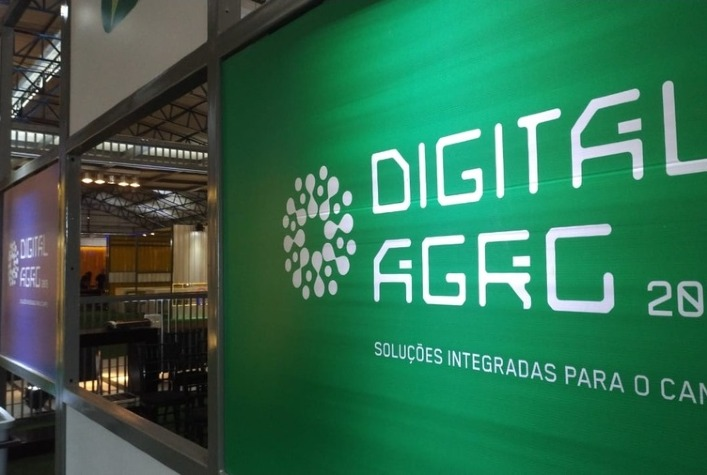

A Frísia, uma das maiores cooperativas agroindustriais do Brasil, tem investido continuamente em inovação para manter sua posição de destaque no setor. Fundada em 1925, a cooperativa não apenas modernizou suas operações ao longo dos anos, mas também se tornou referência em práticas sustentáveis e eficientes no agronegócio.
Nos últimos anos, a Frísia tem implementado tecnologias avançadas que automatizam processos de produção e garantem a rastreabilidade de seus produtos. Sistemas integrados de controle de qualidade permitem monitorar cada etapa da produção, assegurando maior segurança alimentar e eficiência operacional em seus processos.
A Frísia também se destaca por seu compromisso com a sustentabilidade. A cooperativa adota tecnologias que promovem o uso eficiente de recursos naturais, como água e energia. Além disso, a Frísia investe em iniciativas que reduzem o desperdício e promovem o reaproveitamento de subprodutos agrícolas, alinhando-se com os princípios da economia circular.
Outra área de inovação na Frísia é o desenvolvimento de novos produtos e melhorias genéticas no setor pecuário e agrícola. Parcerias com instituições de pesquisa e universidades têm sido fundamentais para a criação de soluções tecnológicas que aprimoram tanto a produção de laticínios quanto a agricultura de precisão.
A combinação dessas iniciativas reforça a visão da Frísia de ser uma cooperativa líder em inovação e sustentabilidade no agronegócio brasileiro. Com uma abordagem focada em tecnologias avançadas e práticas ambientais responsáveis, a Frísia continua a crescer e a impulsionar o desenvolvimento de seus cooperados e da região.